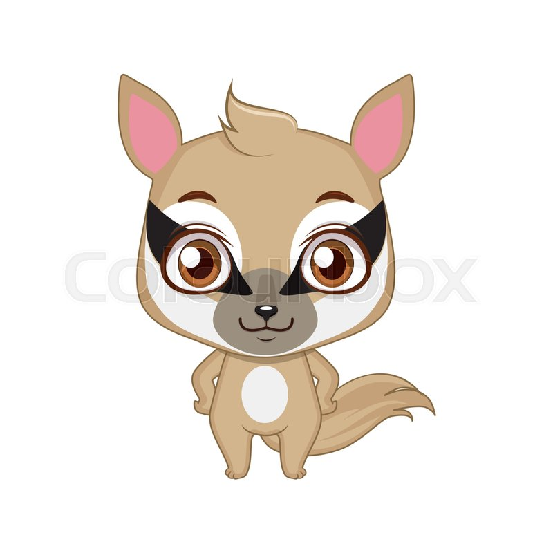

The mascot is Nelson Numbat and the color is Dark Blue.
The name of the moscot is Nibbu
The Nibbu is a tiny cute animal with stripped black and gold fur. The size is so small
that it fits in a single hand.They have a long sticky tongue that allows them pick up
termites, which they eat exclusively.
- They are cute and has a big tail
- They are always energetic and cheer up in games
- Every year the mascot dance for the events

Back to index